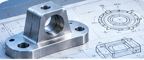

Результати та захист дослідження
Дослідіть закономірності, змініть параметри моделі та запропонуйте власне рішення.

Коротка теорія · відкрити
Результати дослідження подають у таблицях, графіках і висновках. Висновок відповідає на дослідницьке запитання та враховує обмеження. Під час захисту важливо пояснити метод, результати й новизну.
Які теми навчальної програми поєднано?
- Підбиття підсумків науково-дослідницької роботи
- Оформлення дослідницької роботи
- Захист науково-дослідницької роботи
1. Сформулюйте гіпотезу
Як зміниться умовна похибка середнього при збільшенні числа вимірювань?
2. Інтерактивна лабораторія
Змінюйте параметр повзунком. Зафіксуйте щонайменше три значення та поясніть тенденцію.
3. Конструктор дослідження
Перейдіть усіма етапами та визначте, що Ви робитимете на кожному.
Етап 1/5: Проблема
4. Перевірте себе
Що має містити науковий висновок?
5. Інженерний мініпроєкт
Напишіть три речення для захисту: мета, отриманий результат, обмеження досліду.
Ваші записи автоматично зберігаються у цьому браузері.
Підсумковий звіт
PDF міститиме гіпотезу, спостереження, ідею проєкту та поточний результат моделі.
У вікні друку виберіть «Зберегти як PDF».